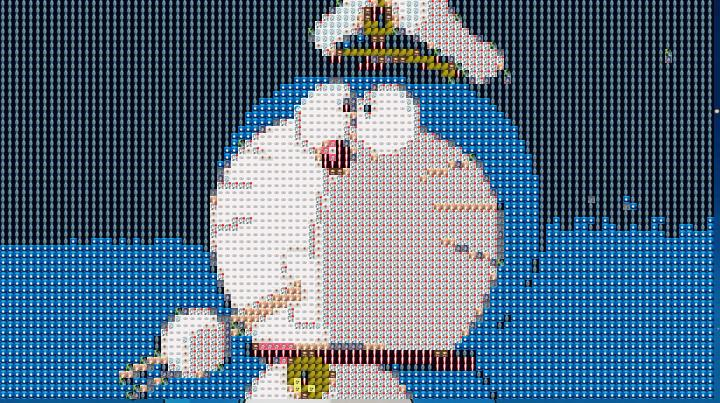

图片像素化处理
对一张图片进行像素化操作，用很多张小图片来替换原有图片中的像素部分，从而拼凑成整张图片（有像素化效果）。
先列一下自己的大体思路：
- 收集一定数量的素材图片，用来进行图片替换，然后确定一张被替换的图片Image。对于素材图片，首先将其进行缩放处理，例如，我们可以将其缩放成7 * 7的图像块，然后我们提取其RGB值，求得该图像块的平均值。
- 然后我们对被替换的图片Image进行操作，将其进行分割操作，划分为一个个7*7的小块，然后对划分出来的每一个小区域同样进行RGB平均值的计算，然后拿来和素材像素块进行比较，找到一个误差值（在代码中我是使用的计算方差的方式）较小（颜色更为接近）的像素图像块，然后将其替换。
- 重复上述操作，知道对整张图片操作完，然后我们将图像保存下来即可。
思路比较清晰，不过是一次编写matlab的代码，所以更多的问题都是出现在代码编写上，还是要多动手啊。
1 |
|
然后在这里主要说一下自己遇到的问题吧~
- 矩阵之间的赋值变换。因为是对图像处理，所以会有很多的矩阵运算，同时又需要同时对RGB三个颜色通道进行处理，所以矩阵的维数比较高，所以在操作的时候也是晕了好几次，同时在矩阵变换的过程中，也是遇到了很多比较难处理的地方。比如将一个高维数组中的后几维赋给一个变量的时候，会遇到赋值过去的数据仍是一个高维数组，然后前几维的维度都是1，这时候，可以使用squeeze（）函数来解决这个问题。
- 同时还有就是图像数据的处理，对于imwrite函数而言，参数中的三维数组必须是unit8类型的，在实验过程中，没有注意到这一方面，所以便直接将一个数组当作参数写了进去，，，当时调试了许久，都是泪。所以可以通过uint8（）函数来进行转化。这里在附上一个blog地址，是写着一方面的。
- 还有一个主要问题就是替换素材图片的选择，在代码实现中，我是采用了RGB方差最小的方式来进行素材图片的选择了，但最初发现效果并不是很好，后来想到可以通过增加素材图片数量的方式来优化效果，下图中的效果是拥有18个素材图片的结果，感觉已经比较完善了，相信如果素材图片更多或者有更好的选择方式，那么最终展现的效果也一定会好很多。
实现效果如下：
